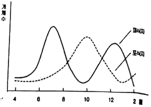
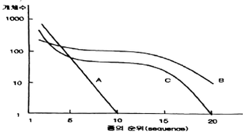
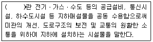
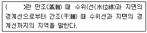
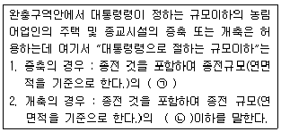
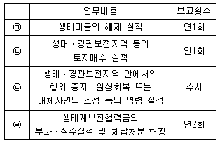

자연생태복원기사(구) (2018-04-28 기출문제)
1과목: 환경생태학개론
1. 생물체를 구성하는 가장 기본적인 원소로서 지구상의 모든 생물들은 이것을 기본으로 유기체를 구성하고 있으며 주로 녹색식물에 이해 유기물로 합성되는 원소는?
- 산소
- 수소
- 황
- 탄소
(정답률: 76%)

2. 황산암모늄, 황산칼륨, 염화칼륨 등의 비료 성분이 가져올 수 있는 토양환경의 변화는?
- 토양 부영양화
- 토양 산성화
- 토양 건조화
- 토양 사막화
(정답률: 81%)
3. 농약이 환경에 미치는 영향이 아닌 것은?
- 생물 체내 농약 잔류
- 천적의 증가
- 해충의 살충제에 대한 저항성 증가
- 토양 및 수질오염
(정답률: 86%)
4. 조간대 지역은 조석의 주기에 따라 대기에 노출되고, 환경변화에 따라 서식 생물의 종류가 다르게 나타나게 된다. 해수면의 수평높이에 따라 달라지는 조간대 생물의 분포를 나타내는 용어는?
- 대상분포
- 임계분포
- 평형분포
- 규칙분포
(정답률: 46%)
5. 황(S)순환의 설명으로 옳지 않은 것은?
- 동식물 시체 속에 유기태황을 분해하여 SO42-으로 전환시키는 미생물은 Aspergillus이다.
- 호수의 진흙 속이나 심해의 바닥에 가라앉은 SO42-은 혐기성 상태에서 Desulfouibrio에 의하여 기체형태의 H2S로 환원된다.
- 산성비란 산도(pH)가 6.5 이하인 강우를 말하며, 대기 중의 NOx와 아황산가스(SO2)가 녹아서 약한 산성을 나타낸다.
- 지각에 존재하는 황은 화산활동과 화석연료의 연소를 통하여 대기권으로 유입된다.
(정답률: 61%)
6. 광합성 과정 중 산화ㆍ환원반응에 적합하게 구성된 과정은?
- CO2+H2O+태양에너지 = glucose+O2
- CO2+2H2A→ (CH2O)+H2O+2A
- 2H2A → 4H+2A
- 4H+CO2→ (CH2O)+H2O
(정답률: 56%)
7. 자연 생태계 보전에 관한 대표적인 국제기관은?
- IUCN
- UNESCO
- OECD
- FAO
(정답률: 77%)
8. 다음 그래프로 설명할 수 있는 군집의 상호작용은?

- 중립(Neuteralism)
- 편리(Commensalism)
- 포식(Predation)
- 상리(Mutualism)
(정답률: 80%)
9. 대기권 중에서 오존층이 위치한 곳은?
- 대류권
- 성층권
- 전리권
- 외기권
(정답률: 87%)
10. 오존의 환경오염에 관한 설명으로 가장 거리가 먼 것은?
- 자동차배출가스가 오존오염의 주원인 중 하나이다.
- 오존은 주로 이상화질소와 탄화수소가 태양광선과 반응하여 생성된다.
- 오존층은 지구 상층부에서 적외선을 막아주기 때문에 생물이 살아갈 수 있는 환경을 만들어 준다.
- 일사량이 많고 고온인 여름철에 주로 오존농도가 높다.
(정답률: 66%)
11. 군집의 우점도-다양성(Dominance-diversity)곡선 중 A, B, C 곡선에 대한 설명으로 옳지 않은 것은?

- A곡선은 생태학적 niche의 선점을 수반하는 분포형으로 가장 개채수가 많은 종은 다음 개체수가 많은 종의 2배이다.
- B곡선은 대부분의 자연적인 군집내에서 나타나는 우점도와 종다양성의 특성을 보여준다.
- C곡선은 생태학적 niche가 불규칙하게 분포하면서 서로 인접하지만 중복되지 않는 경우로 우점도와 종다양성간의 극단적인 형태이다.
- 거친 환경 속에서 끊임없이 niche의 선점을 위해 경쟁할 경우에는 C곡선의 형태로, 중복되지 않은 영토확보를 위한 경쟁이 발생한 경우에는 점차 A곡선의 형태를 보인다.
(정답률: 49%)
12. 북반구의 육상생태계 중 짧은 여름기간 동안 증가하는 생물량에 의해 이동성 물새의 번식이 주로 이뤄지는 지역은?
- 팜파스
- 툰드라
- 차파렐
- 열대우림
(정답률: 73%)
13. 식물이 이용할 수 있는 질소 형태부터 질소의 순환을 올바른 순서로 설명하고 있는 것은?
- 유기질소 → 아질산염 → 암모니아 → 질산염
- 질산염 → 원형질 → 암모니아 → 아질산염
- 아미노산 → 원형질 → 암모니아 → 아질산염
- 아질산염 → 아미노산 → 암모니아 → 원형질
(정답률: 46%)
14. 생물다양성의 범주에 포함하는 개념이 아닌 것은?
- 종 다양성
- 유전적 다양성
- 군집 및 생태계 다양성
- 환경 다양성
(정답률: 72%)
15. 생태계를 구성하고 있는 생물종간의 상호작용의 형태가 아닌 것은?
- 경쟁
- 기생
- 포획
- 공생
(정답률: 84%)
16. 연안생태계 지역을 잘못 설명한 것은?
- 바닷가 부근의 해양생태계와 육상생태계간의 경계지역을 조간대라고 한다.
- 썰물 때의 곳에서부터 대륙붕 가장자리까지의 지역이다.
- 대륙붕 가장자리에서부터 바다 쪽 전체를 포함한다.
- 수심 0~200m 까지의 지역으로 빛이 투과하는 지역을 투광대라고 한다.
(정답률: 65%)
17. 생물의 생태적 지위를 제한하는 제한요인(Limiting factor)에 대한 설명으로 틀린 것은?
- 환경 인자 중에서 부족하거나 조건이 나빠서 생태적 지위를 제한하는 요소를 말한다.
- 생물체가 정상적으로 성장하기 위해서는 특정 영양물질의 최소량이 필요하다는 최소의 법칙이 적용되기도 한다.
- 그 동안 조사된 제한요인은 대개 토양의 광물질 함유량, 최고 최저 기온, 강수량과 같은 복잡한 요소들이다.
- 제한요인은 대개 생물의 생명 주기 전반에 걸쳐 영향을 미친다.
(정답률: 26%)
18. ‘엔트로피의 증가’가 의미하는 것으로 가장 적절한 것은?
- 유기에너지의 상태로 바뀌는 현상
- 잠재적 에너지의 상태로 바뀌는 현상
- 오염된 에너지의 상태로 바뀌는 현상
- 사용 불가능한 에너지의 상태로 바뀌는 형상
(정답률: 79%)
19. 호소의 유역으로부터 유입되는 인의 배출원으로 가장 거리가 먼 것은?
- 비료
- 가축분요
- 하수 처리장
- 생활하수
(정답률: 63%)
20. 대기 중의 질소를 고정할 수 있는 생물이 아닌 것은?
- 자유 생활은 하는 Azotobacter
- 콩과 식물에 공생하는 뿌리혹박테리아
- 일부 남조류
- 수중의 원생동물
(정답률: 67%)
2과목: 환경계획학
21. 환경용량을 평가할 때 사용되는 지표 중의 하나로 재화와 용역의 생산에 필요한 에너지 측면의 가치를 과학적으로 측정한 것은?
- 생태적 발자국
- 에머지
- 에너지 지수
- 에너지환경지표
(정답률: 49%)
22. 내륙형 습지 중 소택형 습지에 대한 설명으로 옳지 않은 것은?
- 면적 8ha 이하, 저수위시 유역의 가장 깊은 곳이 2m 이하이며, 염분농도가 0.5% 이하인 습지
- 지형학적으로 침하되었거나 댐이 건설된 강수로에 위치한 습지
- 왕성한 파도의 작용 혹은 하상의 바위로 된 해안선의 특징이 빈약한 습지
- 교목, 관목, 수생식물, 이끼류, 지의류에 의해 우접되는 습지와 염도가 0.5% 이하인 조수영향지역에서 나타나는 모든 습지
(정답률: 46%)
23. 하천 및 호수환경의 친환경적인 관리지침에 대한 제안으로 부적합한 것은?
- 하안선, 호안선 관련 개발금지구역의 설정
- 주요 조망점으로부터 시각회랑 확보
- 건축물 허가 기준의 완화
- 환경오염 규제 기준의 강화
(정답률: 79%)
24. 현존식생조사를 실시한 결과 밭 1km2, 논 1km2, 일본잎갈나무 조림지 1km2, 20년 미만 상수리나무림 1km2, 20년 이상 신갈나무림 1km2으로 조사되었다. 환경영향평가 협의 결과 녹지자연도 7등급 이상은 보전하고 나머지는 개발 가능한 것으로 협의되었다. 이 대상지에서 개발 가능한 가용지 면적(km2)은?
- 2
- 3
- 4
- 5
(정답률: 55%)
25. 야생동물 이동통로 설계 시 중요하게 고려하지 않아도 되는 항목은?
- 야생동물 이동능력
- 조성 비용의 타당성
- 인간에 의한 간섭 여부
- 연결되어야 할 보호지역 사이의 거리
(정답률: 73%)
26. 생태건축계획에서 기본적으로 고려되어야 할 내용으로 맞지 않는 것은?
- 기후에 적합한 건축
- 에너지 손실 방지 및 보존을 고려
- 물질 순환 체제 고려
- 토지자원 외 절약
(정답률: 72%)
27. 우리나라에서 환경보전을 목적으로 활용되는 토지이용 규제에 해당이 되지 않는 것은?
- 토지관련 법령에 의한 토지의 기능과 적성을 고려
- 일정한 지역을 환경보전에 필요한 지역으로 지정하여 규제
- 지역, 지구를 지정하여 환경보전 목적에 배치되는 일정한 행위를 제한
- 자연환경보전법에 의한 특별대책지역으로 지정
(정답률: 39%)
28. 생태계에서 먹이 피라미드의 내용에 해당되지 않는 것은?
- 열역학 제 1, 2법칙이 적용된다.
- 고차소비자가 많은 에너지를 소비한다.
- 생산자 - 소비자 - 분해자로 구성되어 있다.
- 태양광선을 이용해 에너지를 생산하는 것은 초식동물이다.
(정답률: 77%)
29. 유네스코 MAB(man and the biosphere programme)에 대한 설명으로 옳지 않은 것은?
- 핵심지역, 완충지역, 전이지역의 3가지 기본요소로 구분한다.
- 생물권에 인간이 어떻게 영향을 미치는지를 연구하고 생물권의 파괴를 막기 위하여 출범하였다.
- 지속적인 위협을 받고 있는 보호지역의 한계를 극복하기 위해 생물권 보전지역을 지정하였다.
- 동ㆍ식물 개체군이 일정한 서식환경에서 증가할 때 환경의 저항을 받아 일정한 상한에 도달해 평형상태를 지속한다는 개체군 성장한계이론을 기본으로 한다.
(정답률: 66%)
30. 다음 용도지구에 대한 설명 중 틀린 것은?
- 토지이용을 고도화하고 경관을 보호하기 위하여 건축물 높이의 최저한도를 정할 필요가 있는 지구를 최저고도지구라 한다.
- 학교시설ㆍ고용시설ㆍ항만 또는 공항의 보호, 업무기능의 효율화, 항공기의 안전운항 등을 위하여 지정하는 것은 개발진흥지구이다.
- 문화재와 문화적으로 보존가치가 큰 건축물등의 미관을 유지ㆍ관리하기 위하여 필요한 것은 역사문화미관지구이다.
- 녹지지역ㆍ관리지역ㆍ농림지역 또는 자연환경보전지역 안의 취락을 정비하기 위하여 필요한 지구는 자연취락지구이다.
(정답률: 61%)
31. 생물지리지역 접근에서 생물지리지역의 구분에 대한 설명으로 잘못된 것은?
- 생물지역은 생물지리학적 접근단위의 최대단위이다.
- 하부생물지역은 지역에서의 독특한 기후, 지형, 식생, 유역, 토지이용유형에 의해 구분한다.
- 경관지역은 유역과 산맥에 의해 구분되며 관찰자가 인실할 수 있는 범위이다.
- 장소단위는 독특한 시각적 특징을 지닌 지역으로 위요된 공간(enclosed space)이다.
(정답률: 31%)
32. 사전환경성 검토에 대한 설명으로 틀린 것은?
- 각종 개발계획이나 개발사업을 수립시행함에 있어 타당성 조사 등 계획 초기 단게에서 입지의 타당성, 주변환경과의 조화 등 환경에 미치는 영향을 고려토록 하는 것이다.
- 계획을 수립ㆍ확정하거나 사업을 인가허가승인지정하는 관계행정기관의 장은 환경부장관 또는 지방환경관서의 장(협의기관의 장)과 미리 협의하여야 한다.
- 입지의 타당성, 토지이용게획의 적정성 등을 미리 스크린함으로써 환경영향평가를 보완할 수 있다.
- 보존용도지역에서의 개발사업은 규모에 관계없이 사전환경섬검토를 받아야 한다.
(정답률: 57%)
33. 지구온난화 영향에 대한 설명으로 옳지 않은 것은?
- 해수면의 상승
- 세계적인 기상이변의 빈도가 증가
- 동식물 종의 다양성 증대
- 개발도상국의 농업생산력 저하
(정답률: 78%)
34. 1971년 2월 이란에서 채택된 정부간 협약으로 자연자원의 유용과 보존에 관한 내용을 담은 국제 정부간 협의는?
- 람사협약
- 생물다양성협약
- 사막화방지협약
- 기후변화협약
(정답률: 62%)
35. 자연적 또는 인위적 위협요인으로 개체수가 현저하게 감소되고 있어 위협요인이 제거되거나 완화되지 아니할 경우 가까운 장래에 멸종위기에 처할 우려가 있는 야생동ㆍ식물로서 관계 중앙행정기관의 장과 협의하여 환경부령이 정하는 종은?
- 멸종위기야생동ㆍ식물 Ⅰ급
- 멸종위기야생동ㆍ식물 Ⅱ급
- 멸종위기야생동ㆍ식물 Ⅲ급
- 국제적멸종위기종
(정답률: 60%)
36. 전원도시의 개념이 미국에서 최초로 실현되었다는 래드번(Radburn) 계획의 설명 중 틀린 것은?
- 래드번의 개념은 12~20ha의 대가구(Super Block)를 형성하는 것이었고, 그 가운데로는 통과교통이 지나지 않도록 했다.
- 거실과 현관, 침실이 주거의 앞쪽 정원을 보게 함으로써 개방감을 주었다.
- 녹지내부의 도로는 보행자전용의 도로이며, 자동차도로와 교차하는 곳에서는 육교나 지하도로 처리되어 있다.
- 단지 내 통과교통을 차단하고 보차도를 분리하며, 교통사고 위험을 줄이는 쿨데삭(Cul-de-sac) 개념을 채택하였다.
(정답률: 55%)
37. 도시관리게획의 경관지구를 세분한 것이 아닌 것은?
- 자연경관지구
- 수변경관지구
- 해안경관지구
- 시가지경관지구
(정답률: 54%)
38. GIS를 활용한 자연환경전보의 내용이 아닌 것은?
- 대상지 규모
- 토지피복/이용
- 산림 및 산지
- 오염물질 종류
(정답률: 77%)
39. IUCN 적색목록의 멸종위기등급에 대한 설명으로 옳지 않은 것은?
- 위급(CR : Critically Endangered) : 긴박한 미래의 야생에서 극도로 높은 점멸 위험에 직면해 있는 분류군
- 취약(VU : Vulnerable) : 위급이나 위기는 아니지만 멀지않은 미래에 야생에서 절멸위기에 처해있는 분류군
- 절멸(EX : Extinct) :사육이나 생포된 상태 또는 과거의 분포범위 밖에서 순화된 개체군으로만 생존이 알려진 분류군
- 최소관심(LC : Least Conecm) : 위협범주 평가기준으로 평가하였으나 위협 또는 준위협 범주에 부적합한 분류군
(정답률: 66%)
40. 녹지자연도에 대한 설명으로 틀린 것은?
- 녹지자연도는 자연환경의 생태적 가치, 자연성, 경관적 가치 등에 따라 등급화한 지도이다.
- 녹지자연도는 식생과 토지이용현황을 기초로 하여 작성한다.
- 녹지자연도 8등급 이상의 경우, 실제적인 개발행위가 불가하다.
- 유사식물군집으로 그룹화하여 자연성 정도를 등급화하기 때문에 녹지자연도는 인위적이고 주관적인 명목 지표라는 한계가 지적되고 있다.
(정답률: 30%)
3과목: 생태복원공학
41. 물에 의한 토양침식의 형태 및 유형 중 빗물침식과 관계가 가장 먼 것은?
- 복류수침식
- 빗방울침식
- 면상침식
- 누구침식
(정답률: 50%)
42. 도시의 생물다양성 보전을 위해 고려해야 할 사항으로 부적합한 것은?
- 생물 개개의 서식처 보전만으로 다양성을 유지할 수 없으므로 서식공간의 네트워크가 필요하다.
- 개개의 생물종 보전대책이 종의 장기적인 생존을 위해 최우선적으로 고려되어야 한다.
- 미래의 생물서식환경과 종의 생존을 위해 넓은 범위에서의 대책이 시급하다.
- 서식지 규모의 단편화, 축소화, 질적 악화를 방지하기 위해서는 서식환경 전체를 대상으로 하는 대책이 필요하다.
(정답률: 70%)
43. 황폐한 산간계곡의 유역면적 10ha인 곳에서 강우강도가 100mm/hr일 때, 최대유량(m3/s)은? (단, 유역의 유출계수 = 0.8)
- 0.1
- 0.2
- 2.2
- 4.4
(정답률: 55%)
44. 복원 계획을 위한 분석 기법 중 계획의 장래효과를 예측하여 복수의 대안을 비교하는 분석방법은?
- GAP 분석
- 시나리오 분석
- 행동권 분석
- 중첩분석
(정답률: 69%)
45. 생태통로의 사후관리 단계에서 필요한 고려사항이 아닌 것은?
- 서식지의 안정성 보장
- 외부간섭 차단
- 통로기능과 효율성 평가
- 개선정도 제공
(정답률: 41%)
46. 도시생태계 복원을 위한 절차 중 가장 선행되어야 하는 것은?
- 시행, 관리, 모니터링의 실시
- 복원계획의 작성
- 복원목적의 설정
- 대상지역의 여건분석
(정답률: 64%)
47. 자연환경보전지역의 산림에서 5천제곱미터의 채굴사업 훼손 면적이 발생했을 경우 납부해야 할 생태계보전협력급은?
- 6백만원
- 1천5백만원
- 2천5백만원
- 3천만원
(정답률: 52%)
48. 버드나무류 꺽꽃이 재료로 이용한 자연형하천복원 공사에 대한 설명 중 맞는 것은?
- 꺽꽃이용 주가지의 직경은 1cm 미만인 것을 선발한다.
- 가지의 증산을 방지하기 위해 잎을 모두 제거한다.
- 채취 후 12시간 이내에 꺽꽃이가 가능하도록 해야 한다.
- 시공은 생장이 정지한 11~12월 중순경에 한다.
(정답률: 58%)
49. 수관저류는 수관표면이 포화되는데 필요한 최소의 강우량이다. 수관저류 능력에 가장 큰 영향을 미치는 요인으로만 짝지어진 것은?
- 엽면적지수, 강우강도, 수종
- 엽면적지수, 강우량, 수종
- 낙엽지량, 엽면적지수, 강우강도
- 낙엽지량, 강우량, 수종
(정답률: 35%)
50. 복원의 유형 중에서 대체에 대한 설명에 해당하지 않는 것은?
- 훼손된 지역의 입지에 동일하게 만들어 주는 것
- 다른 생태계로 원래 생태계를 대신하는 것
- 구조에 있어서는 간단할 수 있지만, 보다 생산적일 수 있음
- 초지를 농업적 목초지로 전환하여 높은 생산성을 보유하게 함
(정답률: 58%)
51. 야생동물 이동 통로의 형태 중 훼손 횡단부위가 넓고, 절토 지역 또는 장애물 등으로 동물을 위한 통로설치가 어려운 지역에 만들어지는 통로는?
- Culvert
- Shelterbelt
- Box
- Overbridge
(정답률: 77%)
52. 식생조사 방법 중 하나인 Branu-Blanquet 방법에 대한 설명으로 옳지 않은 것은?
- 주목적은 조사구의 범위에 나타나는 식물의 양적평가를 수반하여 완전한 목록을 작성하는데 있다.
- 기본적인 조사도구는 조사용지, 화판, 필기구, 줄자, 접자, 지형도, 카메라, 경사계, 식물채집용구 등이다.
- 특징 중 하나는 상관적, 구조적으로 균질하지 않는 식생의 집합체에 조사구를 설정한다.
- 조사구 내에 출현한 식물을 계층별로 기록하여 식생조사표에 기입한다.
(정답률: 48%)
53. 옥상녹화의 효과 및 장점 중 생태학적 장점으로서 가장 큰 것은?
- 대기정화 기능, 냉난발비 절감
- 도시 열섬효과 감소
- 단열효과, 옥상파손 방지
- 녹음제공, 부동산 가치 상승
(정답률: 68%)
54. 대규모 건설사업이 생태환경에 미치는 영향과 가장 거리가 먼 것은?
- 생물 서식지의 훼손 및 손실
- 생물 서식지의 단절 및 분절
- 생물종 다양성의 지속적 유지
- 생태계 기능의 변화
(정답률: 75%)
55. 야생동물 이동통로의 기능에 대한 설명으로 틀린 것은?
- 천적 및 대형 교란으로부터 피난처 역할
- 교육적, 위락적 및 심미적 가치 제고
- 단편화된 생태계의 파편 유지
- 야생동물의 이동 및 서식처로 이용
(정답률: 50%)
56. 유효수분량에 대한 설명 중 틀린 것은?
- 유효수분량은 식물이 이용할 수 있는 토양속의 수분량을 가리키는 것이다.
- 일반적으로 pF1.8(포장용수량)과 pF5.0(영구위조점)의 수분량의 차를 이효성 유효수분이라고 한다.
- 일반적으로 이효성유효수분량의 수치를 L/m3 단위로 표시하여 토양의 보수력을 평가한다.
- 유효수분량은 일반적으로 80L/m3 이상이 바람직하다.
(정답률: 56%)
57. 해안 사방 망심기의 망 구획 크기로 가장 적합한 것은?
- 50×50cm
- 100×100cm
- 150×150cm
- 200×200cm
(정답률: 44%)
58. 침식방지제 중 화학적 자재에 해당하는 것은?
- 양생제류
- 시트류
- 망상류
- 화이버류
(정답률: 60%)
59. 반개방적 수림의 특성이 아닌 것은?
- 일정부분 강도 있는 벌채를 시행함
- 되도록 자연림에 가까운 수림을 유지, 형성하는 것을 목적으로 함
- 조릿대나 억새류 등의 지피식물은 잘 자라고, 오랜 세월이 경과하면 풍부한 임상을 기대할 수 있음
- 수목구성은 낙엽수가 대부분이며, 상록수는 종(從)의 관계가 되는 것이 보통임
(정답률: 53%)
60. 녹화용 자생식물 중 그 특성(꽃, 형태, 관상 및 생태 등)이 바르게 연결된 것은?
- 구상나무 - 4월 갈색 개화 - 낙엽침엽성 - 열매의 관상가치
- 쪽동백나무 - 5월 붉은색 개화
- 층층나무 - 5월 붉은색 개화 - 낙엽활엽성 - 어릴 때 생장속도 느림
- 노각나무 - 6월 흰색 개화 - 낙엽활엽성 - 꽃과 줄기의 관상가치
(정답률: 54%)
4과목: 경관생태학
61. Diamond가 제시한 보호구 설계를 위한 기준으로 옳지 않은 것은?
- 보호구의 면적이 클수록 바람직하다.
- 같은 면적일 경우 여러개로 나눠 있는 것보다 하나로 있는 것이 바람직하다.
- 패치간의 거리가 가까운 것이 바람직하다.
- 같은 면적일 경우 주연부 길이가 큰 것이 유리하다.
(정답률: 62%)
62. 틈 분석(Gap analysis) 내용으로 가장 거리가 먼 것은?
- 야생동물의 적절한 또는 최소한의 보전장소를 지정하기 위해 활용한다.
- 지리정보체계를 이용하여 종 분포에 대한 정보를 파악한다.
- 생태게 다양성을 포함하는 공원계획에 활용가능하다.
- 비생물적인 요소는 고려할 필요가 없다.
(정답률: 79%)
63. 비오톱을 보전 및 조성할 때 고려해야 할 원칙으로 부적합한 것은?
- 조성 대상지 본래의 자연환경을 복원하고 보전하며, 이를 위해 자연환경은 필수적으로 파악한다.
- 생물과 비생물을 모두 포함하는 이용소재는 외부에서 도입하여 본래의 취약점을 보완하도록 한다.
- 회복, 보전할 생물의 계속적 생존을 위하여 이에 상응하는 용수를 확보하도록 한다.
- 비오톱 네트워크 시스템 구축을 위해 해당 비오톱 조성 후 모니터링을 충분히 실시한다.
(정답률: 68%)
64. 생문보전지구의 크기와 수를 결정할 때 고려되어야 할 사항은?
- 여러 개의 작은 패치보다는 적은 수의 큰 패치가 개체군을 유지하는데 유리하다.
- 적은 수의 큰 패치보다는 여러 개의 작은 패치가 개체군을 유지하는데 유리하다.
- 생물의 서식서로서 숲 패치는 항상 동질적인 비역동성을 유지하는 동일한 면적이어야 한다.
- 최소존속개채군이 유지되기 위해서는 경관패치의 크기 보다는 패치들 간의 연결성이 더 중요하다.
(정답률: 56%)
65. 인위적 교란을 지속적으로 받고 있는 농촌경관의 경관생태학적인 복원 및 보전을 위해 반드시 고려되고 반영되어야 할 요소가 아닌 것은?
- 경작지
- 묘지
- 2차 생식
- 주택
(정답률: 50%)
66. 옥상녹화의 생태적 효과와 가장 거리가 먼 것은?
- 녹시율의 증대
- 도시 미관 증진
- 도시 열섬 완화
- 소생물 서식공간 증대
(정답률: 44%)
67. 경관을 이루는 기본적인 단위인 경관요소를 크게 3가지로 나눌 때 포함되지 않는 것은?
- 공간(space)
- 조각(parch)
- 바탕(matrix)
- 통로(corridor)
(정답률: 73%)
68. 자연경관 관리계획의 목표와 거리가 먼 것은?
- 자연의 생태적 안전성 확보
- 자연 순응적 및 개발
- 건축물 상호간의 스카이라인 조절
- 자연 보전적인 개발 유도를 통한 생태적 지속성 유지
(정답률: 74%)
69. 사업시행으로 인한 영향예측 시 집중적으로 검토되어야 할 사항으로 가장 거리가 먼 것은?
- 자연생태계의 단절 여부
- 종다양성의 변화 정도
- 일반적인 저감대책의 수립
- 경관의 변화 정도
(정답률: 69%)
70. 토지의 변형과정 중 경관변화에 영향을 미치는 요인이 아닌 것은?
- 조각의 크기
- 기온
- 연결성
- 둘레길이
(정답률: 70%)
71. 교란으로 나타나는 서식처 파편화에 대한 설명 중 틀린 것은?
- 자연식생지역의 파편화는 지표 교란에 의해 바람, 일조, 건조 등의 물리적 구조 변화를 초래한다.
- 파편화는 공간적으로 내부/가장자리의 비율을 증가시킨다.
- 파편화는 연결성과 전체 내부면적을 감소시킨다.
- 초원의 파편화는 자연발화에 의한 조각생성을 저해하고/그에 따라 종 손실을 일으키는 경우도 있다.
(정답률: 68%)
72. 모형(model)은 경관생태학에서 중요한 연구도구이며 미래에도 중요한 도구이다. 모형의 현명한 적용을 위해 필요한 주의사항 중 관계가 먼 것은?
- 모델의 수행 결과는 모형이 수립된 가설이나 가정의 결과이다.
- 계수 값을 계산하는데 있어 오차에 대한 모형의 민감도를 이해하는 것이 중요하다.
- 모형은 현실의 단순화이다.
- 최첨단 기술 적용은 좋은 모형 수립의 신뢰성을 보장한다.
(정답률: 60%)
73. 한반도 해안 경관의 설명으로 옳지 않은 것은?
- 동해안은 융기해안으로서 해안선이 단조롭다.
- 동해안은 주로 조석(tide)이 모래를 옮겨와 사빈해안을 만들었다.
- 서해안은 갯벌이 매우 잘 발달되어 있다.
- 서해안에 발달한 사구는 강한 서풍에 의해 형성된 것이다.
(정답률: 57%)
74. 인간에 의해 간섭을 받고 있는 농ㆍ산촌경관에 대하여 틀린 것은?
- 2차 식생 농ㆍ산촌경관의 주요요소는 2차 식생과 경작지이다.
- 농ㆍ산촌경관의 계획 시 물리적 환경과 주변요소 간의 상호관계를 고려한다.
- 토양 및 지형 유형과 경관구조의 변화는 관계가 없다.
- 농ㆍ산촌경관의 복원ㆍ보전 및 설계 시 서식지와 생물상, 생태계 규모를 조사한다.
(정답률: 76%)
75. 비오톱의 생태적 가치 평가지표로 가장 타당한 것은?
- 이용강도 - 희귀종의 출현 유ㆍ무 - 재생복원능력
- 이용강도 - 접근성 - 표장율
- 포장율 - 종 다양성 - 소득수준
- 종 다양성 - 재생복원능력 - 인구 밀도
(정답률: 69%)
76. 자연의 복원과 관련된 용어의 설명 중 가장 올바른 것은?
- 복원 : 훼손된 자연의 기능만 새롭게 조성하는 것
- 복구 : 훼손된 자연을 자연상태와 유사한 상태에 도달하도록 회복시키는 것
- 재배치 : 훼손되지 이전의 자연구조를 원래 있는 상태로 완전히 회복시키는 것
- 대체 : 훼손된 지역을 자연의 회복력에 의하여 완전히 재생되도록 하는 것
(정답률: 78%)
77. 경관의 공간배열 중 하천통로, 생울타리, 송전선로를 설명하는 공간요소의 명칭은?
- 거미형
- 그래프형
- 촛대형
- 목걸이형
(정답률: 46%)
78. GIS(지리정보체계) 자료의 구축 및 활용 절차를 바르게 순서대로 나열한 것은?
- 자료획득 → 모의실험 → 전처리 → 모델 → 결과출력
- 현장조사 → 실험실 분석 → 자료획득 → 결과도출 → 자료해석
- 자료획득 → 전처리 → 자료관리 → 조장과 분석 → 결과출력
- 현장조사 → 자료획득 → 자료해석 → 전처리 → 결과출력
(정답률: 55%)
79. 해안식생에 대한 설명으로 옳지 않은 것은?
- 하구역의 후미처럼 담수유입의 영향을 받는 곳에 발달된 소택지에는 해안습지가 존재하며, 염색식물이 발달한다.
- 해수의 영향을 받는 하구역의 물가에서는 부들이나 줄이 순군락을 형성하며, 갯는쟁이, 해홍나물, 퉁퉁마디, 칠면초 등의 염색식물 군락이 바다쪽으로 나타난다.
- 거머리알은 연안역의 기초 생산력을 증대시키며, 질소와 인 등의 영양염류를 흡수하고 생리활성 물질의 공급원이다.
- 거머리알의 생육장소는 조간대와 조하대의 경계지역에서 나타나며, 조하대에서도 넓은 초지를 형성한다.
(정답률: 36%)
80. 도시 비오톱 지도의 활용 가치에 대한 설명으로 옳지 않은 것은?
- 경관녹직획 수립의 핵심적 기초 자료를 제공한다.
- 자연보호지역, 경관보호지역 및 주요 생물서식공간 조성의 토대를 제공한다.
- 생태 도시건설을 위한 기초 자료로는 큰 의미가 없다.
- 토양 및 자연체험공간 조성의 타당성 검토를 위한 기초 자료를 제공한다.
(정답률: 77%)
5과목: 자연환경관계법규
81. 환경정책기본법령상 환경부장관이 환경현황조사를 의뢰하거나 환경정보망의 구축ㆍ운영을 위탁할 수 있는 전문기관으로 거리가 먼 것은? (단, 그 밖에 환경부장관이 지정하여 고시하는 기관 및 단체는 제외한다.)
- 국립환경과학원
- 한국환경기술진흥공사
- 한국환경산업기술원
- 한국수자원공사
(정답률: 47%)
82. 다음은 국토의 계획 및 이용에 관한 법률상 용어의 뜻이다. ( )안에 알맞은 것은?

- 공동구
- 공용구
- 공동수용구
- 수용구
(정답률: 58%)
83. 생물다양성 보전 및 이용에 관한 법률상 용어의 뜻으로 옳지 않은 것은?
- “생물다양성”이란 육상생태계 및 수생생태계와 이들의 복합생태계를 포함하는 모든 원천에서 발생한 생물체의 다양성을 말하며, 종내ㆍ종간 및 생태계의 다양성을 포함한다.
- “생물자원”이란 사람을 위하여 가치가 있거나 실제적 또는 잠재적 용도가 있는 유전자원, 생물체, 생물체의 부분, 개체군 또는 생물의 구성요소를 말한다.
- “유전자원”이란 유전(遺傳)의 기능적 단위를 포함하는 기원이 되는 유전물질 중 실질적 또는 잠재적 가치를 지닌 물질을 말한다.
- “생태계 교란생물”이란 외국으로부터 인위적 또는 자연적으로 유입되어 그 본래의 원산지 또는 서식지를 벗어나 존재하게 된 생물을 말한다.
(정답률: 68%)
84. 국토의 계획 및 이용에 관한 법률 시행령상 기반시설 중 세분화한 도로에 해당하지 않는 것은?
- 지하도로
- 보차혼용도로
- 자전거전용도로
- 보행자전용도로
(정답률: 61%)
85. 국토기본법상 구분된 국토계획에 해당하지 않는 것은?
- 지역계획
- 부문별 계획
- 통합계획
- 도종합계획
(정답률: 56%)
86. 야생생물 보호 및 관리에 관한 법률 시행규칙상 멸종위기 야생생물 Ⅰ급(조류)에 해당하지 않는 것은?
- 흰꼬리수리(Haliaeetus albicilla)
- 황새(Ciconia boyciana)
- 검은머리갈매기(Larus saundersi)
- 매(Falco peregrinus)
(정답률: 60%)
87. 독도 등 도서지역의 생태계 보전에 관한 특별법 시행규칙상 환경부장관이 이 법에 따라 특정도서를 지정하거나 해제ㆍ변경한 경우에는 지정일 또는 해제ㆍ변경일부터 얼마이내(기준)에 관보에 이를 고시하여야 하는가?
- 5일
- 10일
- 15일
- 30일
(정답률: 49%)
88. 습지보전법상 습지보호지역으로 지정ㆍ고시된 습지를 공유수면 관리 및 매립에 관한 법률에 따른 면허 없이 매립한 자에 대한 벌칙기준으로 옳은 것은?
- 5년 이하의 징역 또는 5천만원 이하의 벌금
- 3년 이하의 징역 또는 3천만원 이하의 벌금
- 2년 이하의 징역 또는 2천만원 이하의 벌금
- 1천만원 이하의 벌금
(정답률: 57%)
89. 야생생물 보호 및 관리에 관한 법률 시행규칙상 지정된 멸종위기 야생생물 Ⅱ급에 해당되는 생물은?
- 수달(Lutra lutra)
- 두루미(Grus japonensis)
- 수원청개구리(Hyla suweonensis)
- 노랑부리저어새(Platalea leucorodia)
(정답률: 49%)
90. 자연공원법에서 사용하는 용어의 뜻 중 “지구 과학적으로 중요하고 경관이 우수한 지역으로서 이를 보전하고 교육ㆍ관광 사업 등에 활용하기 위하여 환경부장관이 인증한 공원을 말한다.”에 해당하는 것은?
- 지구과학공원
- 지구문화공원
- 과학보전공원
- 지질공원
(정답률: 64%)
91. 환경정책기본법령상 오존(O3)의 대기환경기준(ppm)으로 옳은 것은? (단, 8시간 평균치이다.)
- 0.02이하
- 0.03이하
- 0.⑤이하
- 0.06이하
(정답률: 54%)
92. 자연환경보전법상 자연환경보전기본계획에 포함되어야 할 사항으로 가장 적합한 것은? (단, 그 밖에 자연환경보전에 관하여 대통령령이 정하는 사항은 제외한다.)
- 야생동ㆍ식물의 서식실태조사에 관한 사항
- 생태계교란야생동ㆍ식물의 관리에 관한 사항
- 생태축의 구축ㆍ추진에 관한 사항
- 수렵의 관리에 관한 사항
(정답률: 46%)
93. 환경정책기본법 조항에서 언급하고 있는 사항과 거리가 먼 것은?
- 방사성 물질에 의한 환경오염의 방지를 위하여 적절한 조치를 취할 것
- 과학기술의 발달로 인하여 생태계 또는 인간의 건강에 미치는 해로운 영향을 예방하기 위하여 필요하다고 인정하는 경우 그 영향에 대한 분석이나 위해성 평가 등 적절한 조치를 마련할 것
- 전자파의 위해성 관리 및 치료를 위해 관련기관의 신속한 공조를 유지할 것
- 환경오염으로 인한 국민의 건강상의 피해를 규명하고 환경오염으로 인한 질환에 대한 대책을 마련할 것
(정답률: 72%)
94. 생물다양성 보전 및 이용에 관한 법률상 외래생물 및 생태계교란 생물 관리 등에 규정된 사항으로 거리가 먼 것은?
- 환경부장관은 외래생물관리를 위한 기본계획을 5년마다 수립하여야 한다.
- 시ㆍ도지사는 외래생물관리계획에 따라 외래생물 관리를 위한 시행계획을 3년마다 수립ㆍ시행하여야 한다.
- 외래생물관리계획에는 외래생물 관리를 위한 인력 수급 및 육성 계획이 포함되어야 한다.
- 환경부장관은 위해우려종을 수입ㆍ반입 승인할 때 생태계위해성 결과와 해당 위해우려종이 생태계 등에 미치는 피해의 정도를 고려하여 승인여부를 결정하여야 한다.
(정답률: 48%)
95. 습지보전법상 용어의 정의 중 ()안에 알맞은 것은?

- 내륙습지
- 만조습지
- 간조습지
- 연안습지
(정답률: 75%)
96. 백두대간 보호에 관한 법률 시행령상 보호지역 중 완충구역에서의 허용행위에 관한 기준이다. ( )안에 알맞은 것은?

- ㉠ 100분의 150, ㉡ 100분의 100
- ㉠ 100분의 100, ㉡ 100분의 150
- ㉠ 100분의 130, ㉡ 100분의 100
- ㉠ 100분의 100, ㉡ 100분의 130
(정답률: 46%)
97. 자연환경보전법규상 위임 업무 보고횟수 기준으로 옳지 않은 것은?

- ㉠
- ㉡
- ㉢
- ㉣
(정답률: 56%)
98. 국토의 계획 및 이용에 관한 법률에 따른 용도 지역 안에서 건폐율과 용적률의 최대한도에 대한 조합으로 옳은 것은? (단, 지역 - 건폐율 - 용적률 순이다.)
- 주거지역 - 60% 이하 - 500% 이하
- 상업지역 - 80% 이하 - 1,500 이하
- 공업지역 - 70% 이하 - 400% 이하
- 녹지지역 - 20% 이하 - 80% 이하
(정답률: 46%)
99. 자연공원법상 공원관리청이 설치한 공원시설 사용에 대한 사용료를 내지 아니하고 공원시설을 이용한 자에 대한 과태료 부과기준으로 옳은 것은?
- 500만원 이하의 과태료를 부과한다.
- 100만원 이하의 과태료를 부과한다.
- 50만원 이하의 과태료를 부과한다.
- 10만원 이하의 과태료를 부과한다.
(정답률: 50%)
100. 환경정책기본법상 국가환경종합계획에 포함되어야 하는 사항과 가장 거리가 먼 것은?
- 인구ㆍ산업ㆍ경제ㆍ토지 및 해양의 이용 등 환경변화여건에 관한 사항
- 환경의 현황 및 전망
- 방사능오염물질의 관리에 관한 단계적 대책 및 사업계획
- 자연환경 훼손지의 복원ㆍ복구 및 책임소재 파악
(정답률: 30%)